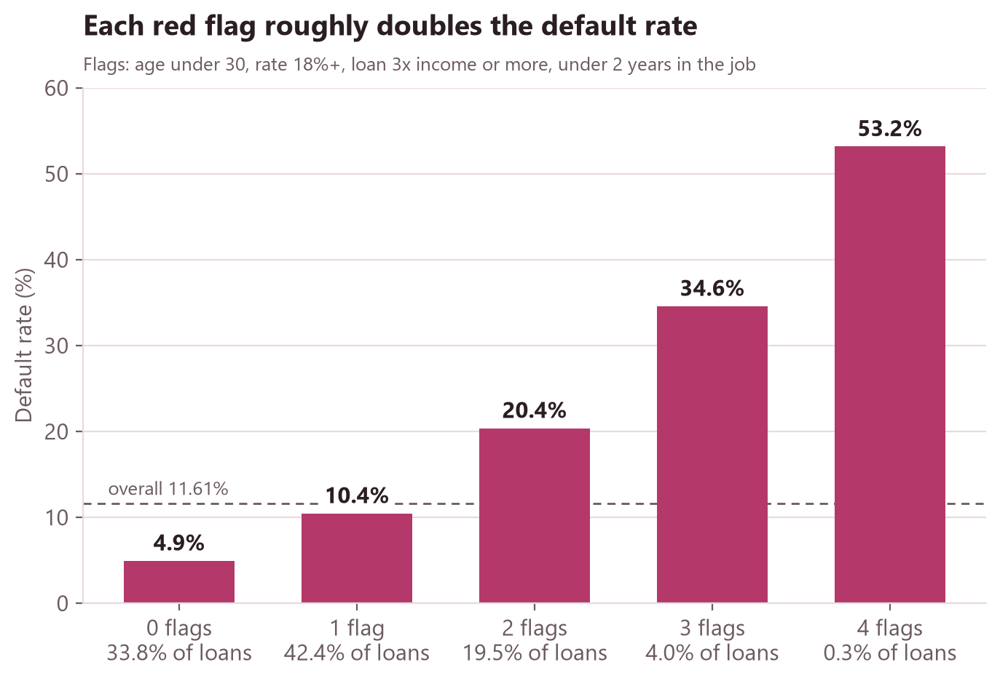

Four red flags separate risk sharply
My model comparison found four attributes carry most of the signal, so I turned them into flags: age under 30, interest rate of 18% or more, a loan 3× income or more, and under 2 years in the current job. Each extra flag roughly doubles the default rate. A third of loans have no flags and default at under 5%. The thresholds are round numbers chosen after looking at the data, so this is a rule of thumb, not a tested model.

11_adv_cte_scorecard.sql.